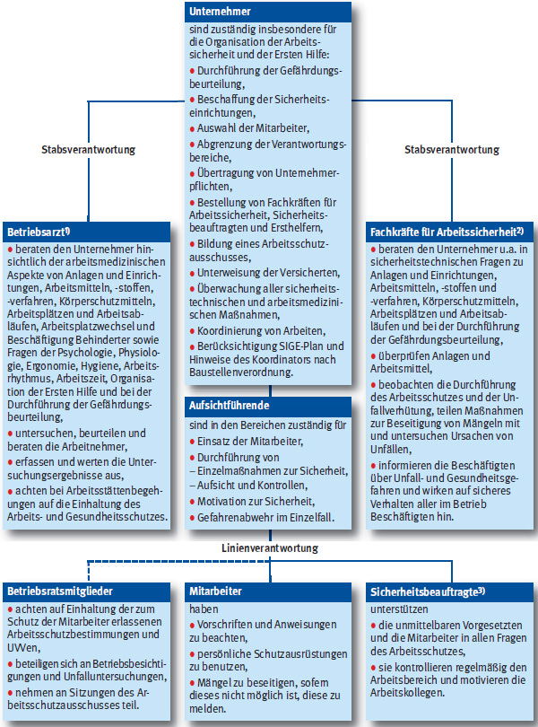
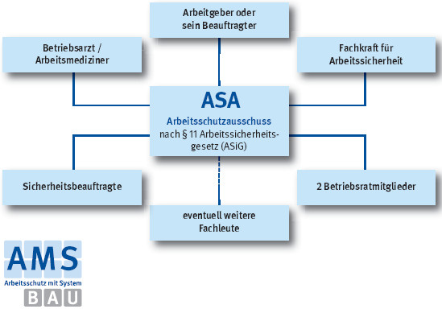

Organisation des betrieblichen Arbeitsschutzes |

1) Betriebsärztliche Betreuung in allen Unternehmen ab 1 Beschäftigten Wahlmöglichkeit:
a) Arbeitsmedizinisch-Sicherheitstechnischer Dienst (ASD) der BG BAU
b) im Betrieb angestellter Betriebsarzt
c) extern beauftragter Betriebsarzt
3) Sicherheitsbeauftragte erforderlich entsprechend der Anzahl der Versicherten bei 21 – 100 Versicherten = 1
101 – 200 Versicherten = 2
201 – 350 Versicherten = 3
351 – 500 Versicherten = 4
501 – 750 Versicherten = 5
751 – 1000 Versicherten = 6
> 1000 Versicherten = 7
Zusammensetzung des Abeitsschutzausschusses (für Betriebe mit >20 Beschäftigten)

07/2021